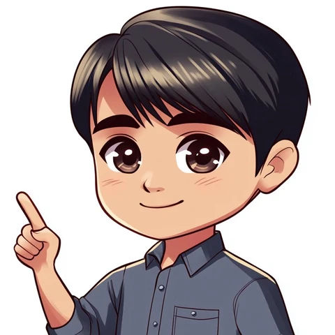

Muse（ミューズ）とは
あなたの「やりたい」を、
実行へ。
調べものも、予定の確認も、SNSの投稿も。
Museは、日々の仕事をサポートするパーソナルAIエージェント。
大切な操作はあなたに確認しながら、作業を進めます。
01
アメリカで話題の
新しいAI
InstagramやFacebookを運営するMeta社のAIエージェント。2026年9月にアメリカで登場し、日本でも提供が始まったばかりです。
02
答えるだけじゃなく、
実行する
カレンダー・メール・SNSと連携して、質問に答えるだけでなく、実際の作業まで進めてくれます。
03
あなた専用の、
安心なAI
あなたの事業や大切なことを覚えているので「昨日の続き」から頼めます。大事な操作は必ず確認を取るので、勝手に投稿・送信される心配はありません。
ChatGPTが「相談相手」なら、Museは「隣で手伝う支援者」です。
こんなお悩みありませんか？
AI、気になってはいるけれど…
AIの使い方が分からない
触ってみたけど「質問に答えてもらうだけ」で終わっている。何から始めればいいか分からない。
日々の小さな作業に追われている
予定の確認、メールの処理、調べもの…。本業以外の作業に、毎日時間を取られている。
SNS投稿が大変で続かない
ネタが浮かばない、文章に時間がかかる。やらなきゃと思いながら、結局止まってしまう。
広報に手が回らない
チラシや告知文を毎回一から作るのは大変。広報も集客も、担当は自分ひとり。
1つでも当てはまったら、この勉強会はあなたのための時間です。
ランチを囲んだ、経営者同士の情報交換も楽しめます。
こんな方に
セミナーの内容
講師と一緒に、スマホで実際に操作しながら体験します。
- 01カレンダー確認今日・今週の予定を、話しかけるだけで確認
- 02メール要約長いメールも、要点だけを短くまとめて把握
- 03調べもののまとめ知りたいことを調べて、読みやすく整理
- 04チラシ作りチラシ・告知文の原稿づくりを体験
- 05Instagram・Threadsのネタ出し投稿ネタから1週間分の投稿案まで
- 06下書き作成から投稿まで「承認してから投稿する」安心の流れも体験
※実は、このページの文章も、チラシも、Museが作っています。当日のデモは、その「働きぶり」そのものです。
タイムスケジュール
12月3日（木）当日の流れ
- 受付開始
- ランチタイム交流しながらお食事を楽しみます
- セミナー開始Museのデモと、スマホでの体験
- 終了
- 退出
講師紹介

大川（オオカワ）
佐賀でAI漫画販促とAI活用支援を行い、IT・AIが苦手な起業家・個人事業主・店舗経営者を支援。AI漫画の販促制作100件以上、行政向け制作実績あり。AIスクール講師。
開催概要
| イベント名 | ランチAI勉強会 |
|---|---|
| 日時 | 2026年12月3日（木） 13:00 受付・ランチ交流会／14:00 セミナー開始 |
| 会場 | 久留米シティプラザ（久留米市六ツ門町8-1） ※有料駐車場あり |
| 参加費 | 1,000円 |
| 定員 | 20名 |
| 主催 | 久留米市東倫理法人会 |
| お問合せ | 0942-40-7250（久留米市東倫理法人会） |
よくある質問
AIをほとんど使ったことがありません。大丈夫ですか？
大丈夫です。当日はデモと体験が中心で、専門用語はできるだけ使わずに進めます。「初めてAIの活用を体験する」方にこそおすすめです。
申し込みはどうすればいいですか？
このページの申込ボタンからフォームにご記入ください。定員20名のため、定員に達し次第、受付を締め切る場合があります。
AIを「知っている」から、
「使えている」へ。
まずは体験してみることが一番の近道です。
ランチを囲みながら、Museが働く様子を一緒に見てみませんか。
2026年12月3日（木）久留米シティプラザ／参加費1,000円・定員20名
申込はこちらから
スマホで読み取れます